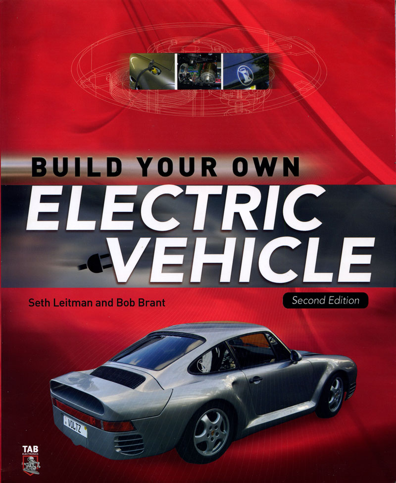
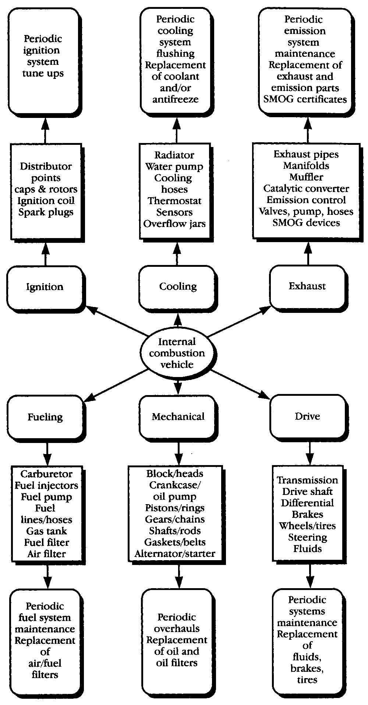
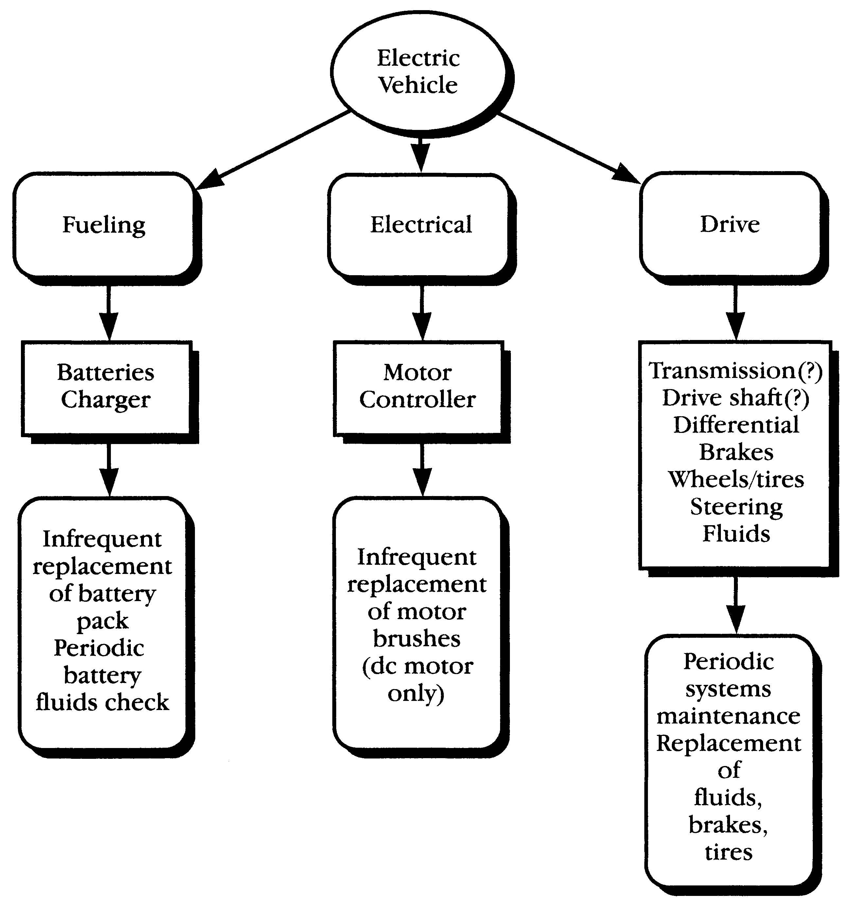
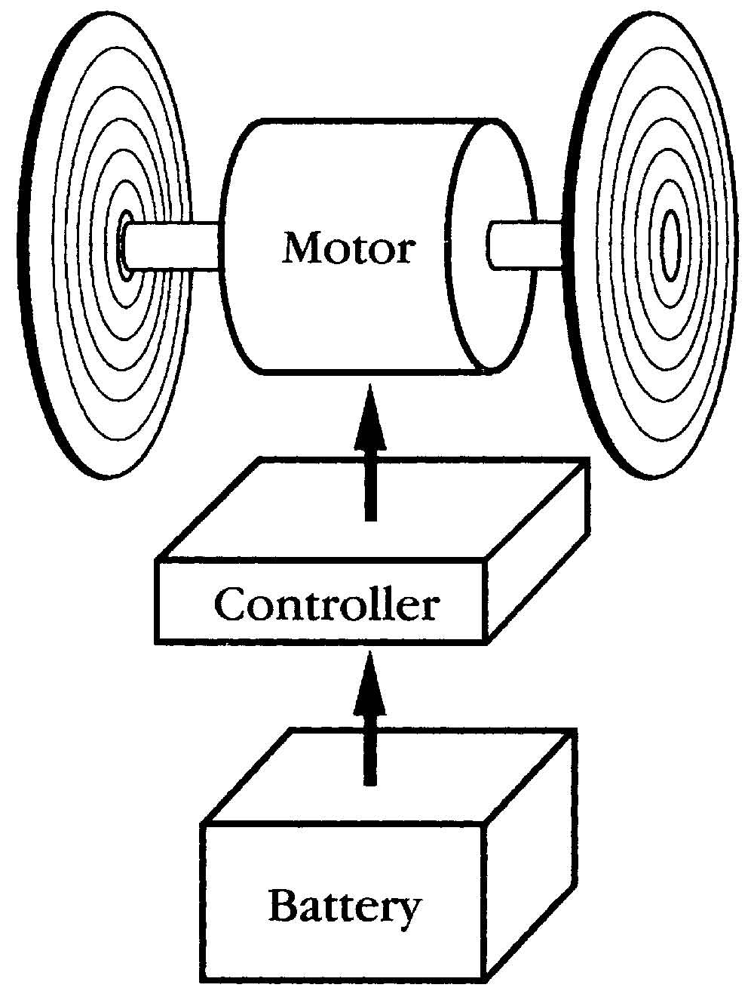
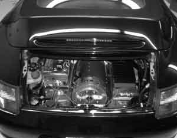
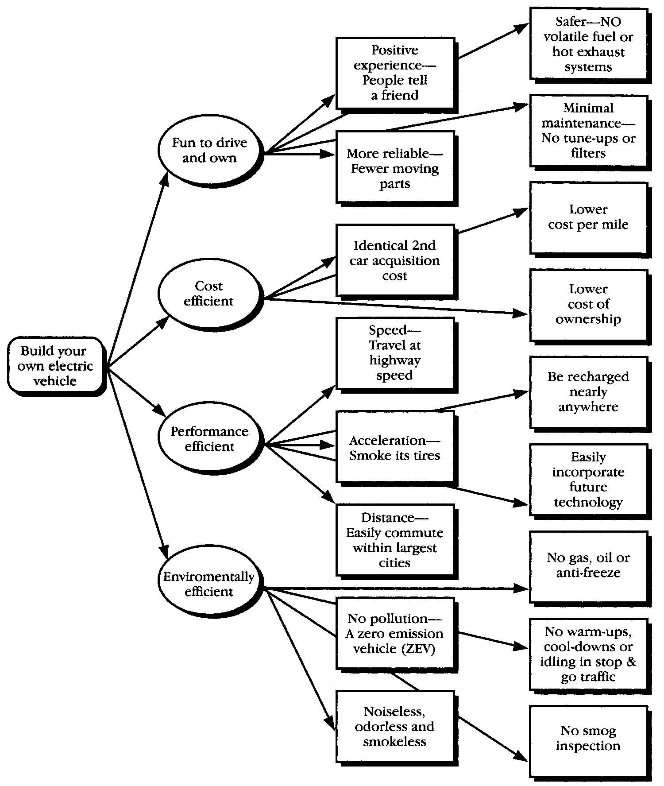

(The following is an excerpt from Build Your Own Electric Vehicle by Seth Leitman and Bob Brant (McGraw-Hill, 2008). The excerpt is Chapter 1: Why Electric Vehicles Are Still Right for Today! The book is a comprehensive resource for anyone interested in electric car conversions, covering the advantages of electric cars, choosing the right car for a conversion, the components of an electric vehicle drivetrain, batteries, maintenance, and resources to learn more and engage with other electric car conversion enthusiasts.)
Why should anyone buy, convert, or build an electric car today? Simply put, they are the cleanest, most efficient, and most cost-effective form of transportation around - and they are really fun to drive. When I worked for the State of New York, we always used to say that electric cars were almost maintenance free: they never require oil changes, new spark plugs, or any other regular repairs. When a person would say, “Really?” I would then say, “Well, not quite - you need to change the washer fluid for the windshield.”
Electric vehicles (EVs) are highly adaptable and part of everyday society: Electric cars are found on mountaintops (railway trams, cable cars), at the bottom of the sea (submarines, Titanic explorer), on the moon (Lunar Rover), in tall buildings (elevators), in cities (subways, light rail, buses, delivery vehicles), hauling heavy rail freight or moving rail passengers fast (Pennsylvania Railroad Washington to New York corridor). Are they all electric vehicles? Yes. Do they run on rails or in shafts or on tethers or with nonrechargeable batteries? Yes.
EVs were designed to do whatever was wanted in the past and can be designed and refined to do whatever is needed in the future. What do you need an EV to be: big, small, powerful, fast, ultra-efficient? Design to meet that need. General Motors’ EV1 is an excellent example of what can be done when starting with a clean sheet of paper. Closer to home and the subject of this book, do you want an EV car, pickup, or van? You decide.
As car companies continue producing sport utility vehicles (SUVs) that cannot meet federal fuel standards or reduce emissions that are harmful to our environment, think about some of the statistics and facts from the U.S. Department of Energy (DOE) and various notable sources: The DOE states that more than half of the oil we use every day is imported. This level of dependence on imports (55 percent) is the highest in our history. The DOE even goes on to say that this dependence on foreign oil will increase as we use up domestic resources. Also, as a national security issue, we should all be concerned that the vast majority of the world’s oil reserves are concentrated in the Middle East (65 to 75 percent), and controlled by the members of the OPEC oil cartel.
Further, DOE goes on to state that 133 million Americans live in areas that failed at least one National Ambient Air Quality Standard. Transportation vehicles produce 25 to 75 percent of key chemicals that pollute the air, causing smog and health problems. All new cars must meet federal emissions standards. But as vehicles get older, the amount of pollution they produce increases.
In addition, only about 20 percent of the energy in the fuel you put in your gas tank gets used to move your car down the road or run useful accessories like air conditioning or power steering. The rest of the energy is lost. Clearly the potential to improve fuel economy with advanced technologies is enormous.
What can we do? Drive electric cars. Here are some reasons why.
1. Although they are only at a relatively embryonic stage in terms of market penetration, electric cars represent the most environmentally friendly vehicle fuel, as they have absolutely no emissions. The energy generated to power the EV and the energy to move the vehicle is 97 percent cleaner in terms of noxious pollutants.
2. Another advantage of electric motors is their ability to provide power at almost any engine speed. Whereas only about 20 percent of the chemical energy in gasoline gets converted into useful work at the wheels of an internal combustion vehicle, 75 percent or more of the energy from a battery reaches its wheels.
3. One of the big arguments made by car companies against electric cars is that EVs are powered by power plants, which are powered primarily by coal. Less than 2 percent of U.S. electricity is generated from oil, so using electricity as a transportation fuel would greatly reduce dependence on imported petroleum.
4. Even assuming that the electricity to power the EV is not produced from rooftop solar or natural gas (let’s assume it comes 100 percent from coal), it is still much cleaner than gasoline produced from petroleum!
5. The power plants are stationary sources that can be modified over time to become cleaner.
The major concerns facing the electric vehicle industry are range, top speed, and cost. Ultimately, it’s the batteries that will determine the cost and performance of EVs. The only way electric vehicles are going to make a big difference in people’s lives is if they can do everything a gas car can do and more. They have to look great and they have to be safe.
Conversions use currently approved car frames and have been going on for years with gas cars using performance-based engines and motors. With controllers (basically, the engine) reaching 1,000 to 2,000 amps, high-end car batteries, and the light weight of a Porsche 911 chassis, electric cars can provide respectable performance. They are fun to drive, virtually silent, and they coast very easily when you let off the accelerator pedal. In other words, you can convert an old Porsche 911 to go over 100 mph with a 50-mile range using lead-acid batteries alone! With lithium-ion battery technology you can get the car to go 180 to 200 miles and the cost is still less than some brand-new SUVs.
In an effort to move the market toward the electric car, some people are trying other alternatives, including:
• Driving hydrogen/fuel cell cars
• Converting hybrid cars to either grid-connected or plug-in hybrids
• Buying hybrid-electric cars
• Purchasing low-speed electric vehicles, such as the GEM car
• Driving the last remaining automaker-built electric cars, such as the Toyota RAV4 EV or the TH!NK City (manufactured with Ford Motor Co.), if they can be found.
Sooner or later, we will get to an electric car by the car companies. Whether it happens in my lifetime is not the question. My point is that you can get an electric vehicle today. You can also take any vehicle you want and convert it to an electric vehicle. We can also encourage the fix-it guy down the street to help us with our conversion so that more mechanics across the country are building electric cars.
Electric cars are not difficult to build and they are easy to convert. There are so many reasons to convince you of the need to go electric:
• The cost of a gallon of gas
• Higher asthma rates
• Our need to reduce our reliance on imported oils
• The prospect of owning a car that is cost-effective, fun, and longer-lasting than most cars on the road today.
Once again: How about the fact that you can convert an electric vehicle today? Right now! And it would cost you less than some new cars on the market. There are so many television shows showing people “tricking out” their cars by adding better engines, or doing just about anything to make it go fast and be safe. Electric car conversions do all that and more. They allow the next generation to have a safer world without relying on foreign sources of oil while giving our kids really clean and cool cars to drive.
In very practical terms, the 2001 Porsche and the 1993 Ford Ranger pickup electric vehicle conversions (discussed in Chapter 11 of the book) go 75 mph, get 60 miles (or better) on a charge, use conventional lead-acid batteries and off-the-shelf components, and can be put together by almost anyone. Its batteries cost about $2,200 and last about three years, its conversion parts cost about $5,500 to $7,000, and it costs $1.25 to recharge, or “fuel up.” In New York terms, that’s less than a token on a subway. Also, the maintenance costs are negligible compared to the oil changes, radiator repairs, and all the other additional maintenance costs of a car powered by an internal combustion engine.
In this chapter you’ll learn what an electric vehicle is, and explore the change in consciousness responsible for the upsurge in interest surrounding it. You’ll discover the truths and untruths behind electric vehicle myths. You’ll also learn about the EV’s advantages, and why its benefits - assisted by technological improvements - will continue to increase in the future.
To really appreciate an electric car, it’s best to start with a look at the internal combustion engine vehicle. The difference between the two is a study in contrasts.
Mankind’s continued fascination with the internal combustion engine vehicle is an enigma. The internal combustion engine is a device that inherently tries to destroy itself: Numerous explosions drive its pistons up and down to turn a shaft. A shaft rotating at 6,000 revolutions/minute produces 100 explosions every second. These explosions in turn require a massive vessel to contain them - typically a cast-iron cylinder block. Additional systems are necessary:
• A cooling system to keep the temperatures within a safe operating range.
• An exhaust system to remove the heated exhaust products safely.
• An ignition system to initiate the combustion at the right moment.
• A fueling system to introduce the proper mixture of air and gas for combustion.
• A lubricating system to reduce wear on high-temperature, rapidly moving parts.
• A starting system to get the whole cycle going.
It’s complicated to keep all these systems working together. This complexity means more things can go wrong (more frequent repairs and higher repair costs). Figure 1-3 summarizes the internal combustion engine vehicle systems.
Unfortunately, the internal combustion engine’s legacy of destruction doesn’t just stop with itself. The internal combustion engine is a variant of the generic combustion process. To light a match, you use oxygen (O2) from the air to burn a carbon-based fuel (wood or cardboard matchstick), generate carbon dioxide (CO2), emit toxic waste gases (you can see the smoke and perhaps smell the sulfur), and leave a solid waste (burnt matchstick). The volume of air around you is far greater than that consumed by the match. Air currents soon dissipate the smoke and smell, and you toss the matchstick.
Today’s internal combustion engine is more evolved than ever. However, we still have a carbon-based combustion process that creates heat and pollution. Everything about the internal combustion engine is toxic, and is still one of the least-efficient mechanical devices on the planet. Unlike lighting a single match, the use of hundreds of millions (soon to be billions) of internal combustion engine vehicles threatens to destroy all life on Earth. You’ll read about environmental problems caused by internal combustion engine vehicles in Chapter 2.
While an internal combustion engine has hundreds of moving parts, an electric motor only has one. That’s one of the main reasons why electric cars are so efficient. To make an electric vehicle out of a car, pickup, or van you are driving now, all you need to do is take out the internal combustion engine along with all related ignition, cooling, fueling, and exhaust system parts, and add an electric motor, batteries, and a controller. Hey, it doesn’t get any simpler than this!
Figure 1-5 shows all there is to it: Batteries and a charger are your “fueling” system, an electric motor and controller are your “electrical” system, and the “drive” system was as before (although today’s advanced electric vehicle designs don’t even need the transmission and drive shaft).
A simple diagram of an electric vehicle looks like a simple diagram of a portable electric shaver: a battery, a motor, and a controller or switch that adjusts the flow of electricity to the motor to control its speed. That’s it. Nothing comes out of your electric shaver and nothing comes out of your electric car. EVs are simple (therefore highly reliable), have lifetimes measured in millions of miles, need no periodic maintenance (filters, etc.), and cost significantly less per mile to operate than gas cars. They are highly flexible as well, using electric energy readily available anywhere as input fuel.
In addition to all these benefits, if you buy, build, or convert your electric vehicle from an internal combustion engine vehicle chassis as suggested in this book, you perform a double service for the environment: You remove one polluting car from the road and add one nonpolluting electric vehicle to service.
You’ve had a quick tour and side-by-side comparison of electric vehicles and internal combustion engine vehicles. Now let’s take a closer look at electric vehicles.
An electric vehicle consists of a battery that provides energy, an electric motor that drives the wheels, and a controller that regulates the energy flow to the motor. Figure 1-5 shows all there is to it - but don’t be fooled by its simplicity. Scientists, engineers, and inventors down through the ages have always said, “In simplicity there is elegance.” Let’s find out why the electric vehicle concept is elegant.
Electric Motors. Electric motors can be found in so many sizes and places, and have so many varied uses, that we tend to take them for granted. Universal in application, they can be as big as a house or smaller than your fingernail, and can be powered by any source of electricity. In fact, they are so reliable, quiet, and inexpensive that we tend to overlook just how pervasive and influential they are in virtually every civilized person’s life.
Each of us encounters dozens, if not hundreds, of electric motors daily without even thinking about them: The alarm clock that wakes you; the television you turn on for the news; you remove coffee beans from the refrigerator and put the coffee beans in a grinder; in the bathroom you use an electric shaver, electric toothbrush, or hair dryer; breakfast might be assisted by your electric juicer, blender, or food mixer; you might clean your home with your vacuum cleaner or clean your clothes with your washer and dryer; next you’re into your automobile, subway, bus, or light rail transit to ride to work, where you might go through an automatic gate or door or take an elevator or escalator to your floor; at home or at work you sit down at your computer, use the Internet, e-mail, cell phone, or Blackberry, and use your fax or copier after you adjust the fan, heater, or air conditioner. Back at home in the evening, you might use an electric garage door opener, program your TiVO, or use an electric power tool on a project. On and on, you get the picture.
Why are electric motors ubiquitous? In one word - convenience. Electric motors do work so that you don’t have to. Whether it’s pulling, pushing, lifting, stirring, or oscillating, the electric motor converts electrical energy into motion, which is further adapted to do useful work.
What is the secret of the electric motor’s widespread use? Reliability. This is because of its simplicity. Regardless of type, all electric motors have only two basic components: a rotor (the moving part) and a stator (the stationary part). That’s right - it has only one moving part. If you design, manufacture, and use an electric motor correctly, it is virtually impervious to failure and indestructible in use.
In internal combustion automobiles, in addition to your all-important electric starter motor, you typically find electric motors in the passenger compartment heating/cooling system, radiator fan, windshield wipers, electric seats, windows, door locks, trunk latch, outside rear view mirrors, outside radio antenna, and more.
Batteries. No matter where you go, you cannot get away from batteries either. They’re in your pocket tape recorder, portable radio, telephone, cell phone, laptop computer, portable power tool, appliance, game, flashlight, camera, and many more devices. Batteries come in two distinct flavors: rechargeable and nonrechargeable. Like motors, they come in all sorts of sizes, shapes, weights, and capacities. Unlike motors, they have no moving parts. The nonrechargeable batteries you simply dispose of when they are out of juice; rechargeable batteries you connect to a recharger or source of electric power to build them up to capacity. There are different types of batteries. There are rechargeable lead-acid, nickel metal hydride, and lithium-ion batteries (as some examples), which can be used in your car to manage the recharging process invisibly via an under-the-hood generator or alternator that recharges the battery while you’re driving.
Why are batteries ubiquitous? In a word - convenience. The battery, in conjunction with the starter motor, serves the all-important function of starting the automobile powered by the conventional internal combustion engine. In fact, it was the battery and electric starter motor combination, first introduced in the early 1920s and changed very little since then, that put the internal combustion engine car on the map - it made cars easy to start and easy to use for anyone, anywhere.
Another great thing about the promise of electric cars is lithium-ion battery technology. It is moving rapidly into the marketplace and dropping in price. Over the next few years we can expect further drops in price, making EV conversions more affordable. Soon enough, the standard will be lithium-ion batteries in any conversion kit.
Rechargeable lead-acid automotive batteries perform their job very reliably over a wide range of temperature extremes and, if kept properly charged, will maintain their efficiency and deliver stable output characteristics over a relatively long period of time - several years. A lead-acid automotive battery is unlikely to fail unless you shock it, drop it, discharge it completely, or allow a cell to go dry. The only maintenance required in lead-acid batteries is checking each cell’s electrolyte level and periodically refilling them with water. Newer, sealed batteries require no maintenance at all.
Controllers. Controllers have become much more intelligent. The same technology that reduced computers from room-sized to desk-sized allows you to exercise precise control over an electric motor. Regardless of the voltage source, current needs, or motor type, today’s controllers - built with reliable solid-state electric components - can be designed to meet virtually any need and can easily be made compact to fit conveniently under the hood of your car.
Why are electric vehicles elegant? When you join an electric motor, battery, and controller together, you get an electric vehicle that is both reliable and convenient. Perhaps the best analogy is that when you “go EV” you can drive your entire car from an oversized electric starter motor, a more powerful set of rechargeable batteries, and a very sophisticated starter switch. But it’s only going to get better.
Back in the early 1990s when the first edition of this book was published, electric vehicles resembled your battery-operated electric shaver, portable power tool, or kitchen appliance. Today and tomorrow’s electric vehicles more closely resemble your portable laptop computer in terms of both sophistication and capabilities.
Besides all the discussion of electric cars and the California Air Resources Board (CARB) mandates to incentivize electric cars, hybrids, and fuel cells that are replicated in several other states, very few people have bought, built, or converted an electric vehicle because they wanted to save planet Earth.
Here are some of the reasons why people do get into electric vehicles.
Electric Cars Offer the “Total Experience”
Word of mouth and personal experience make a difference. Another way (more recently) is from the documentary movie, Who Killed The Electric Car? The cumulative effect of numerous people attending EV symposiums, rallies, and Electric Automobile Association meetings and movies all over the world - and experiencing firsthand what it’s like to ride or drive one - has gradually done the job. Almost universally, people enjoy the electric vehicle experience, are impressed by it, and tell a friend. That’s the real reason for the resurgence in interest in electric cars.
Electric Cars Are Fun to Drive
Imagine turning on a car and hearing nothing! The only way you can tell that the car is on is by looking at the battery/fuel gauge on the dashboard. This is only the first surprise of many when you get into an electric vehicle.
When I used to work for the New York Power Authority (NYPA) and do ride-and-drives for the public, I always used to say that once you get in, you are changed forever. It’s true!! Every single time a person got out of the car, there would be a smile on their face, a sense of real excitement, and then the inevitable first question (“Where can I get one?!”) would always pop up.
Electric vehicles are first and foremost practical - but also fun to own and drive. Owners say they become downright addictive. Tooling around in breezy electric vehicle silence gives you all the pleasure without the noise. As I liked to put it to my friends, “You can really hear your stereo.”
Electric Vehicles Make a Difference by Standing Out
Electric vehicles are a great way to drive and make a real contribution to the country. By driving an oil-free, gasoline-free car, you reduce our country’s reliance on imported oil; that will make you friends.
Whether you’ve owned or even driven an EV1 from GM (what a ride!), Toyota RAV4, TH!NK City, Solectria Force, or a converted Porsche 914 or Ford Ranger pickup truck, or a built-from-scratch chassis with custom kitcar body, your electric vehicle is a sexy, quiet, technologically spiffy show-stopper.
Believe me, if the words “electric car” or “electric vehicle” appear prominently on the outside of your car, pickup, or van, you will not want for instant friends at any stoplight, shopping center, gas station, or just playing stop and go on the highway. One time I was driving a Toyota RAV4 EV on the West Side Highway in Manhattan with the window down. All different types of people were intrigued. (“Is that an electric car? When can I get one? How far does it go? Is it as good as people say?” Or the best was, “That is one phat ride!”) Or you can park it in a conspicuous spot, lift the hood, and wait for the first passerby to ask questions, as Figure 1-6 suggests.
There’s a level of respect you receive, a pride in riding in the car, and a feeling of leading the pack in those experiences, at shows and demonstrations. One suggestion too: have plenty of literature always available on hand so you can keep your electric vehicle discussions to under five minutes in length. On the other hand, if you just want to meet people, make the letters on your sign real big and you will never want for company.
The first owners of anything new always have an aura of prestige and mystique about them. You will be instantly coronated in your own neighborhood. You are driving what others have only talked about. While hopefully everyone will own one in the future, you are driving an electric vehicle today. When TV sets were introduced in the 1950s, the whole neighborhood crowded into the first houses with the first tiny black and white screens. Expect the same with your electric vehicle project. This will show you can reduce your carbon footprint with an electric car and it won’t cost hundreds of thousands of dollars.
All this emotional stuff is nice, but let’s talk out-of-pocket dollars. Ask any electric vehicle conversion owner, and they’ll tell you it transports them where they want to go, is very reliable, and saves them money. Let’s examine separately the operating, purchase, and lifetime ownership costs and summarize the potential savings.
Operating Costs. Electric vehicles only consume electricity. In between charge-ups, there are no other consumables to worry about except an occasional watering of the batteries. These figures are covered in more detail later, but the Ford Ranger electric vehicle pickup conversion discussed in Chapter 10 averages about 0.44 kWh (kilowatt-hours, a measure of energy consumption) per mile. At $0.165 per kWh for electricity in New York (check your electric utility monthly statement for the prevailing rate in your area) that translates to
0.44 kWh/mile 3 $0.165/kWh = 0.0726 (7.3 cents) per mile
(Note: Does not include charging cost and 3.3 cents per mile for battery replacement.)
Let’s compare these costs with the EV’s gasoline-powered internal combustion engine counterpart in a pickup chassis. The latter consumes gasoline; its ignition, cooling, fueling, and exhaust systems require filters, fluids, and periodic maintenance. The gasoline-powered pickup chassis (equivalent to the previous example) averages 20 miles per gallon or 0.05 gallons per mile. At $4.50 per gallon for gas, that translates to
0.05 gallons/mile x $4.50/gallon = 0.225 (22.5 cents) per mile
Consumables and periodic maintenance must still be added. Assuming these cost $41.67 per month (oil change averaged over three months, fuel additives, aligning and balancing tires), and annual mileage is 12,000 miles per year, this translates to
$500/year ÷ 12,000 miles/year = 0.0416 (4.2 cents) per mile
Adding the two figures together, you’re looking at 27 cents per mile operating cost for a gasoline-powered vehicle versus 7.3 cents per mile for its electric vehicle equivalent - almost three times the cost of the electric vehicle. While your average EV conversion - made with off-the-shelf components - might consume about 0.4 kWh per mile, General Motor’s EV1 was rated at 0.1 kWh per mile (0.07 kWh/km). This drops your electric vehicle operating costs to 0.5 cents per mile! (Note: cost per mile varies with driver.)
Purchase Costs. Commercially manufactured electric vehicles are prohibitively expensive today - if you can find one at all. Tomorrow’s electric vehicle costs will obviously drop to become equal to or less than internal combustion–powered vehicles as more units are made (and manufacturing economies-of-scale come into play) because they have far fewer (and much simpler) parts.
But this book advocates the conversion alternative - you convert an existing internal combustion engine vehicle to an electric vehicle. You remove the internal combustion engine and all systems that go with it, and add an electric motor, controller, and batteries. If you start with a used internal combustion engine vehicle chassis you can save even more (with the advantage of having the drivetrain components already broken in, as later chapters point out). (Even if you buy a Porsche or other high-end car, if you were planning to buy a Porsche in the first place, you would already be willing to spend more money than the average consumer.)
To this must be added the cost of your internal combustion engine vehicle chassis. If you start with the chassis of a brand new vehicle, this could mean $10,000 or more (less any credit for removed internal combustion engine components). A good, used chassis might cost you just $2,000 to $3,000 (or less if you take advantage of special situations as mentioned in Chapter 5). So your total purchase costs are in the $8,000 to $25,000 ballpark. This is substantially less than already converted electric vehicles! Obviously, you can do better if you buy carefully and scrounge for parts. Equally obviously, you can also spend more if you elect to have someone else do the conversion labor, decide you must have a brand new Ferrari Testarossa chassis, or elect to build a Kevlar-bodied roadster with titanium frame from scratch.
This book promotes building it yourself. As a second vehicle choice, logic (and Parkinson’s law - the demand upon a resource tends to expand to match the supply of the resource) dictates that the money spent for this decision will expand to fill the budget available - regardless of whether an internal combustion engine vehicle or EV is chosen. So second vehicle purchase costs for an internal combustion or electric vehicle are a wash - they are identical.
EVs are modularly upgradable. See a better motor and controller? Bolt them on. Find some more efficient batteries? Strap them in. You don’t have to get an entirely new vehicle; you can adapt new technology incrementally as it becomes available.
Electric cars are easily modified to meet special needs. Even when EVs are manufactured in volume, the exact model needed by everyone will not be made because it would be prohibitively expensive to do so. But specialist shops that add heaters for those living in the north, air conditioners for those living in the south, and both for those living in the heartland will spring up. Chapter 4 will introduce you to the conversion specialists that exist today.
Electric vehicles are safer for you and everyone around you. EVs are a boon for safety-minded individuals. Electric vehicles are called ZEVs (zero emission vehicles) because they emit nothing, whether they are moving or stopped. In fact, when stopped, electric vehicle motors are not running and use no energy at all.
This is in direct contrast to internal combustion engine–powered vehicles that not only consume fuel but also do their best polluting when stopped and idling in traffic. EVs are obviously the ideal solution for minimizing pollution and energy waste on congested stop-and-go commuting highways all over the world, but this section is about saving yourself: as an electric vehicle owner, you are not going to be choking on your own exhaust fumes. Electric vehicles are easily and infinitely adaptable. Want more acceleration? Put in a bigger electric motor. Want greater range? Choose a better power-to-weight design. Want more speed? Pay attention to your design’s aerodynamics, weight, and power.
When you buy, convert, or build an EV today, all these choices and more are yours to make because there are no standards and few restrictions. The primary restrictions regard safety (you want to be covered in this area anyway), and are taken care of by using an existing internal combustion engine automotive chassis that has already been safety qualified. Other safety standards to be used when buying, mounting, using, and servicing your EV conversion components are discussed later in this book.
It gets better: EVs carry no combustible fuels, 20,000-volt spark plug ignition circuits, hot exhaust manifolds, catalytic converters, or hot radiators on board. These things simply won’t happen:
• Engine compartment fires (caused by ignition or hot manifolds-as seen by the side of the road),
• Hot radiator coolant explosions (caused by improper radiator cap removal; sadly many of us have experienced this firsthand), or
• Starting forest fires (caused by hot catalytic converters parked over dry grass)
Even better, you save wear and tear on yourself by not having to do needless chores associated with vehicle ownership. Contrast the numerous periodic internal combustion engine vehicle activities shown in Figure 1-3 with the far simpler electric vehicle requirements shown in Figure 1-4.
In the “yuck” but not really dangerous category - electric vehicle owners don’t have to mess with oil (no dark slippery spots on your garage floor), antifreeze (no lighter, slippery spots on your garage floor), or filters (the kind you hold in a rag far away from your body because they are filthy or gunky).
For critics who comment that lead-acid batteries emit potentially dangerous hydrogen gas when charging, and point out that electric vehicles have multiple batteries: When is the last time you heard of a death or injury resulting from charging a battery? It’s possible but very unlikely.
How about the acid part in lead-acid batteries? You’ll learn about battery details in Chapter 8, but the acid is diluted sulfuric acid. It definitely hurts if it spills on you or anything else, but it doesn’t explode or catch fire and can readily be counteracted by flushing with water.
On another safety side, while electric vehicles do not emit noise pollution, there has been concern about hybrid vehicles being unsafe for seeing-impaired pedestrians because the engines don’t make noise.
However, the Baltimore-based National Federation of the Blind presented written testimony to Congress asking for a minimum sound standard for hybrids to be included in the state’s emissions regulations. As the president of the group, Marc Maurer, mentioned, he’s not interested in returning to gas-guzzling vehicles, they just want fuel-efficient hybrids to have some type of warning noise.
“I don’t want to pick that way of going, but I don’t want to get run over by a quiet car, either,” Maurer said.
Manufacturers are aware of the problem but have made no pledges yet. Toyota is studying the issue internally, said Bill Kwong, a spokesman for Toyota Motor Sales USA.
“One of the many benefits of the Prius, besides excellent fuel economy and low emissions, is quiet performance. Not only does it not pollute the air, it doesn’t create noise pollution,” Kwong said. “We are studying the issue and trying to find that delicate balance.”
The Association of International Auto Manufacturers Inc., a trade group, is also studying the problem, along with a committee established by the Society of Automotive Engineers. The groups are considering “the possibility of setting a minimum noise level standard for hybrid vehicles,” said Mike Camissa, the safety director for the manufacturers’ association.”
EV ownership is visible proof of your commitment to help clean up the environment. Chapter 2 will cover in detail the environmental benefits of this choice. EVs produce no emissions of any kind to harm the air, and virtually everything in them is recyclable. Plus, every electric vehicle conversion represents one less polluting internal combustion vehicle on the road. Electric vehicles are not only the most modern and efficient forms of transportation, but they also help reduce our carbon footprint today!
There have been four widely circulated myths/rumors about electric vehicles that are not true. Because the reality in each case is the 180-degree opposite of the myth, you should know about them.
Myth #1: Electric Vehicles Can’t Go Fast Enough
Well, this is probably true if you are talking about a four-ton van carrying 36 batteries. The reality is that EVs can go as fast as you want - just choose the electric vehicle model (or design or build one) with the speed capability you want. One example of how fast they can accelerate was when I was driving a TH!NK City (really small city EV) in New York City. I was at a traffic light next to a Ford cab (how appropriate since Ford owned TH!NK at the time). The cabbie wanted to see how fast it could go so I said, “I know it can beat you.” (Please note that all of this was done well within the legal speed limits on the road in Manhattan!) He said, “You’re crazy!” So the light turned green and I hit the accelerator. The look on the cabbie’s face was worth a million dollars. He was more than surprised at the torque and acceleration. People on the street were screaming, “Go, go, go.” I blew him away. We met up at the next traffic light and he said, “Where can I get one?” Enough said.
Most current EVs use nickel metal hydride batteries, such as the Toyota RAV4 or even today’s hybrid electric cars such as the Prius or the Honda Civic hybrid. Other conversion companies are starting to use lithium-ion batteries; however, most still use lead acid. The speed of an electric vehicle is directly related to its weight, body/chassis characteristics such as air and rolling resistance, electric motor size (capacity), and battery voltage. The more voltage, the more batteries you have, the faster any given electric motor will be able to push the vehicle - but adding batteries adds also to the vehicle weight. All of these factors mean you can control how much speed you get out of your EV, and you’re certainly not limited in any way. If speed is important, then optimize the electric vehicle you choose for it. It’s as simple as that.
Myth #2: Electric Vehicles Have Limited Range
Nothing could be further from the truth but, unfortunately, this myth has been widely accepted. The reality is that electric vehicles can go as far as most people need. Remember, this book advocates an electric vehicle conversion only as your second vehicle. While lithium-ion batteries will expand your range dramatically and there are some people that are travelling cross country in EVs, it is not yet the best use for a massive road trip at this time.
But what is its range? The federal government reports that the average daily commuter trip distance for all modes of vehicle travel (auto, truck, bus) is 10 miles, and this figure hasn’t changed appreciably in 20 years of data-gathering. An earlier study showed that 98 percent of all vehicle trips are under 50 miles per day; most people do all their driving locally, and only take a few long trips. Trips of 100 miles and longer account for only 17 percent of total miles. General Motors’ own surveys in the early ‘90s (taken from a sampling of drivers in Boston, Los Angeles, and Houston) indicated:
• Most people don’t drive very far.
• More than 40 percent of all trips were under 5 miles.
• Only 8 percent of all trips were more than 25 miles.
• Nearly 85 percent of the drivers drove less than 75 miles per day.
Virtually any of today’s 120-volt electric vehicle conversions will go 75 miles - using readily available off-the-shelf components - if you keep the weight under 3,000 pounds. This means an EV can meet more than 85 percent of the average needs. If you’re commuting to work - a place that presumably has an electrical outlet available - you can nearly double your range by recharging during your working hours. Plus, if range is really important, optimize your electric vehicle for it. It’s that simple.
Myth #3: Electric Vehicles Are Not Convenient
The myth that electric cars are not effective as a real form of transportation or that they are not convenient is a really silly myth/rumor. Car companies and others have complained that there is not enough recharging infrastructure across the country or that you cannot charge the car anywhere you would like as with fueling up a car. A popular question is, “Suppose you’re driving and you are not near your home to charge up or you run out of electricity; what do you do?” Well, my favorite answer is, “I would do the same thing I’d do if I ran out of gas - call AAA or a tow truck.”
The reality is that electric vehicles are extremely convenient. Recharging is as convenient as your nearest electrical outlet. Here are some other reasons:
• You can get electricity anywhere you can get gas - there are no gas stations without electricity.
• You can get electricity from many other places - there are few homes and virtually no businesses in the United States without electricity. All these are potential sources for you to recharge your electric vehicle.
• Over time, as electric vehicles and plug-in hybrid electric cars become prevalent, fuel providers will increase their infrastructure for charging stations and we will all love the price of that versus a gallon of gas.
• As far as being stuck in the middle of nowhere goes, other than taking extended trips in western U.S. deserts (and even these are filling up rapidly), there are only a few places you can drive 75 miles without seeing an electric outlet in the contiguous United States. Europe and Japan have no such places.
• Plug-in-anywhere recharging capability is an overwhelming electric vehicle advantage. No question it’s an advantage when your electric vehicle is parked in your home’s garage, carport, or driveway. If you live in an apartment and can work out a charging arrangement, it’s an even better idea: a very simple device can be rigged to signal you if anyone ever tries to steal your car.
• How much more convenient could electric vehicles be? There are very few places you can drive in the civilized world where you can’t recharge in a pinch, and your only other concern is to add water once in a while. Electricity exists virtually everywhere; you just have to figure out how to tap into it. If your electric vehicle has an onboard charger, extension cord, and plug(s) available, it’s no more difficult than going to your neighbor’s house to borrow a cup of sugar. Except, of course, you probably want to leave a cash tip in this case.
While there are no electrical outlets specifically designated for recharging electric vehicles conveniently located everywhere today, and though it’s unquestionably easier and faster to recharge your electric vehicle from a 110-volt or 220-volt kiosk, the widely available 120-volt electric supply does the job quite nicely. When more infrastructure exists in the future, it will be even more convenient to charge your batteries. In the future, you will be able to recharge quicker from multiple voltage and current options, have “quick charge” capability by dumping one battery stack into another, and maybe even have uniform battery packs that you swap and strap on at a local “battery station” in no more time than it takes you to get a fill-up at a gas station today. Just as it’s used in your home today, electricity is clean, quiet, safe, and stays at the outlet until you need it.
Myth #4: Electric Vehicles Are Expensive
While perhaps true of electric vehicles that are manufactured in low volume today - and partially true of professionally done conversion units - it’s not true of the do-it-yourself electric vehicle conversions this book advocates. The reality, as we saw earlier in this chapter, is that electric vehicles cost the same to buy (you’re not going to spend any more for it than you would have budgeted anyway for your second internal combustion engine vehicle), the same to maintain, and far less per mile to operate. In the long term, future volume production and technology improvements will only make the cost benefits favor electric vehicles even more.
Disadvantages. Well, there had to be a downside. If any one of the factors below is important to you, you might be better served by taking an alternate course of action.
Extended Trips. As already mentioned, the electric vehicle is not your best choice for transcontinental travel at this time, or long trips in general. Not because you can’t do it. Alternate methods are just more convenient. As mentioned, this book advocates the use of the convert-it-yourself electric vehicle as a second vehicle. When you need to take longer trips, use your first vehicle, take an airplane, train, or bus, or rent a vehicle.
Time to Purchase/Build. Regardless of your decision to buy, build, or convert an electric vehicle, it is going to take you time to do it, but certainly less than it used to. There is a growing network of new and used electric vehicle dealers and conversion shops. However, the supply for the highest grade controllers and motors do take time to produce and will slow down your conversion process. Although, as demand for these products increases, the supply will increase too and the time that it takes for these products to be built will get reduced. (Check the Sources section at the end of the book.) But plan on taking a few weeks to a few months to arrive at the electric vehicle of your choice.
Electric vehicle resale (if you should decide to sell your EV) will take longer - for the same reason. While a reasonably ready market exists via the Electric Auto Association chapter and national newsletters, it is still going to take you longer and be less convenient than going down to a local automobile dealer.
Repairs. Handy electric vehicle repair shops don’t exist yet either. Although the build-it-yourself experience will enable your rapid diagnosis of any problems, replacement parts could be days, weeks, or months away - even via expedited carriers. You could just stockpile spare parts yourself, but the time to carefully think through this or any other repair alternative is before you make your electric vehicle decision.
What you are seeing today in electric vehicles is just the tip of the iceberg. It is guaranteed that future improvements will make them faster, longer-ranged, and even more efficient. There are five prevailing reasons that guarantee electric vehicles will always be with us in the future. The only one not previously discussed is technological change. All the available technology has just about been squeezed out of internal combustion engine vehicles, and they are going to be even more environmentally squeezed in the future. This will hit each buyer right in the pocketbook. Incremental gains will not come inexpensively. Internal combustion engines are nearly at the end of their technological lifetime. Almost all improvements in meeting today’s higher Corporate Average Fuel Economy (CAFE) requirements have been achieved via improving electronics
technology. CAFE is the sales weighted average fuel economy, expressed in miles per gallon (mpg), of a manufacturer’s fleet of passenger cars or light trucks with a gross vehicle weight rating (GVWR) of 8,500 lbs. or less, manufactured for sale in the United States, for any given model year. Fuel economy is defined as the average mileage traveled by an automobile per gallon of gasoline (or equivalent amount of other fuel) consumed as measured in accordance with the testing and evaluation protocol set forth by the Environmental Protection Agency (EPA) (Source: National Highway Traffic Safety Administration).
By 2020, CAFE mandates all new cars built will have the fuel economy of 35 miles per gallon as approved by the United State Congress. Since the fuel efficiency of an electric vehicle is more than that, an EV will always be the best approach.
In addition, once lithium battery technology becomes the standard, electric vehicles will be able to go 300 to 600 miles (depending on the technology). Unquestionably, the future looks bright for electric vehicles because the best is yet to come.
The four remaining reasons were covered in this chapter, and are summarized in Figure 1-7:
• Fun to drive and own
• Cost efficient
• Performance efficient
• Environmentally efficient
Any one of the four reasons above is compelling by itself; the benefits of all these reasons taken together are overwhelming.
Build Your Own Electric Vehicle is available through Mother Earth News shopping.
|
 MCGRAW-HILL You can convert it! Build Your Own Electric Vehicle details everything you ever wanted to know about converting a gas car to reliably run on electric power. |
 MCGRAW-HILL Figure 1-3: Internal combustion engine systems. Click the image to see an enlarged version. |
 MCGRAW-HILL Figure 1-4: Electric vehicle systems |
|
 MCGRAW-HILL Figure 1-5: Simple block diagram of an electric vehicle |
 MCGRAW-HILL "Hey, where's the engine?" |
MCGRAW-HILL A converted electric Porsche. |
|
 MCGRAW-HILL Figure 1-7: Four reasons why EVs will always be with us in the future. Click the image to enlarge. |
|
|